Prepare
Tassar egg samples are prepared for optical capture using a repeatable microscopy workflow.
Field-ready diagnostic intelligence
Explainable, offline microscopy for Pebrine screening and Tassar egg fertility assessment.
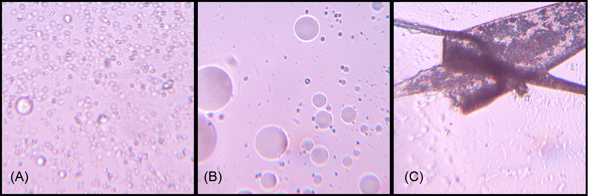
The operating idea
Diagnostic chain
SeriScope combines microscopy, image processing, deep learning, explainability, and embedded computing in one operator-focused workflow.
Tassar egg samples are prepared for optical capture using a repeatable microscopy workflow.
The device captures microscopic image data under practical field constraints.
Computer vision and classification models screen for Pebrine and assess egg fertility.
Explainable outputs support a trained operator while inference remains fully offline.
01 Sample
02 Signal
03 Decision
Evidence, visible
More than 1,400 field examples inform a five-model evaluation spanning disease screening, fertility assessment, visual explanation, and embedded deployment.
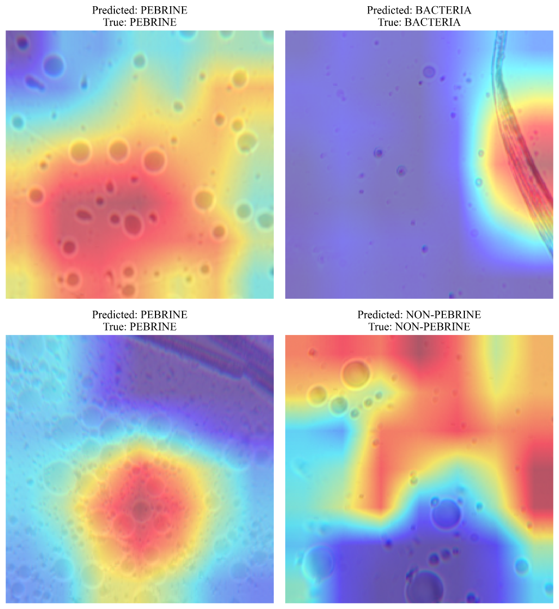
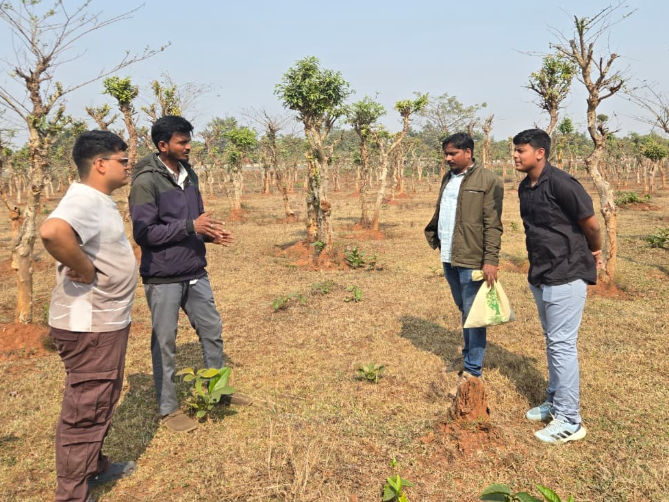
Research programme
Visits to Sukinda Silk Farm and nearby grainages supplied samples and expert guidance, grounding the work in Tassar sericulture conditions.
VGG16, EfficientNet-B0, EfficientNet-B3, ResNet-50, and MicroNet were evaluated; VGG16 reached 98.68% test accuracy.
A deep-learning classifier identifies Pebrine, non-Pebrine, and bacterial cases, with a lightweight texture-and-shape cross-check alongside it.
ONNX CPU inference ran at about 15–47 milliseconds per image, keeping the image workflow local and usable without network access.
Fluorescence microscopy, PCR/LAMP, wider external datasets, hardware integration, and field trials define the next research phase.
Impact
The system is shaped around grainages and sericulture centres where connectivity, specialist access, time, and equipment can all be limited.
A repeatable visual workflow can support faster screening and more consistent documentation.
Earlier, local decisions can reduce avoidable loss and strengthen rural livelihoods.
Structured field imagery and model evaluation create a base for deeper validation.
Low-cost offline hardware makes responsible adoption more practical beyond major laboratories.
Recognition
From an Atal Tinkering Lab to a global science stage, SeriScope grew through field visits, microscopy experiments, model evaluation, hardware trials, and a steady insistence that the final system work outside a presentation hall.
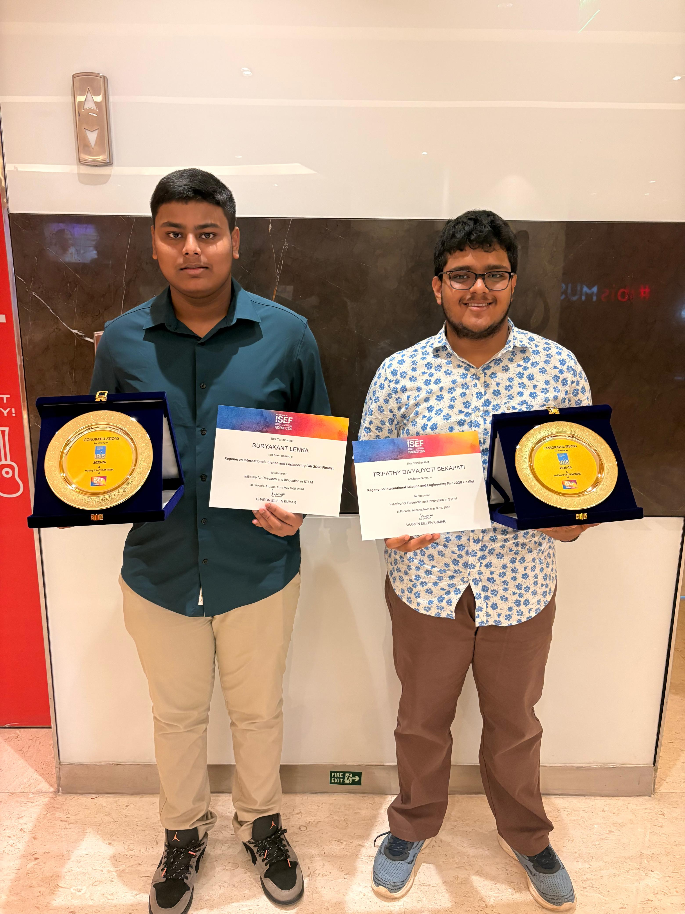
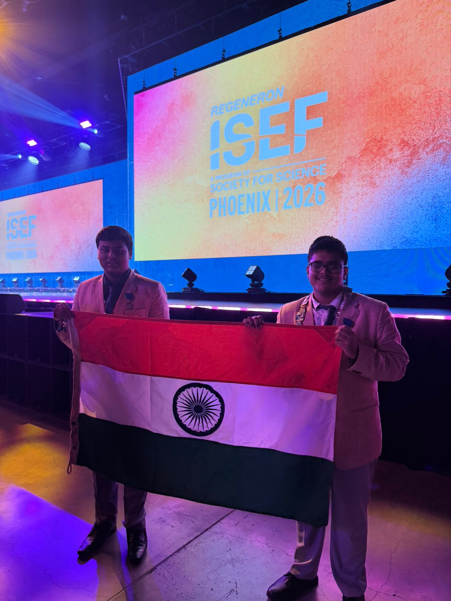
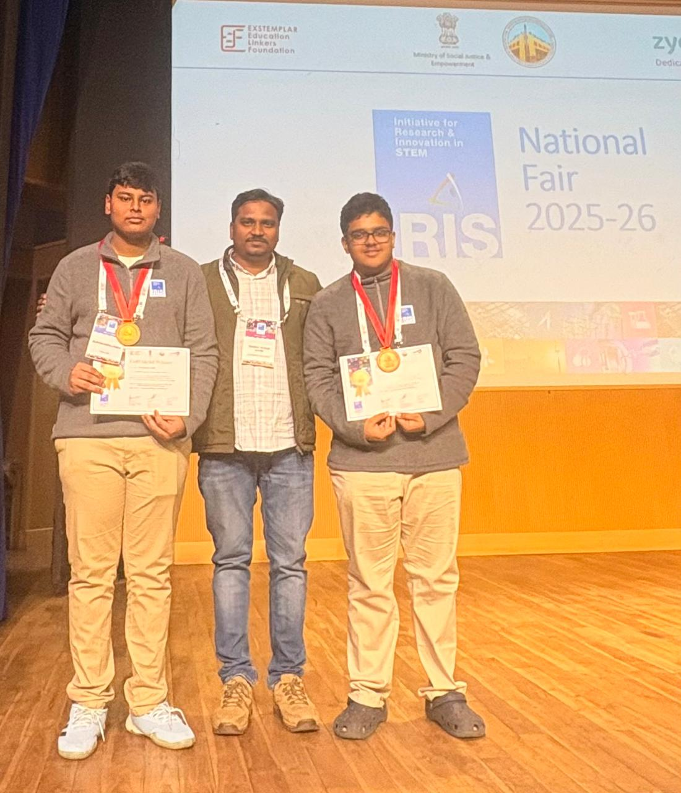
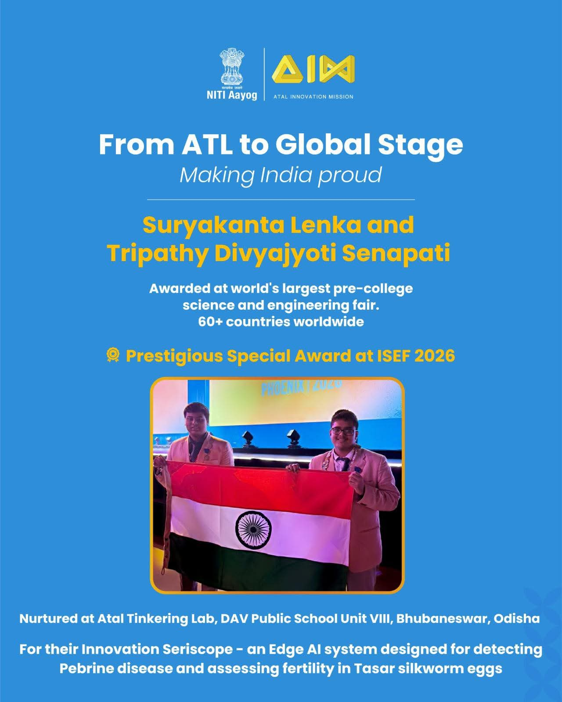
2026 recognition
The people behind the project
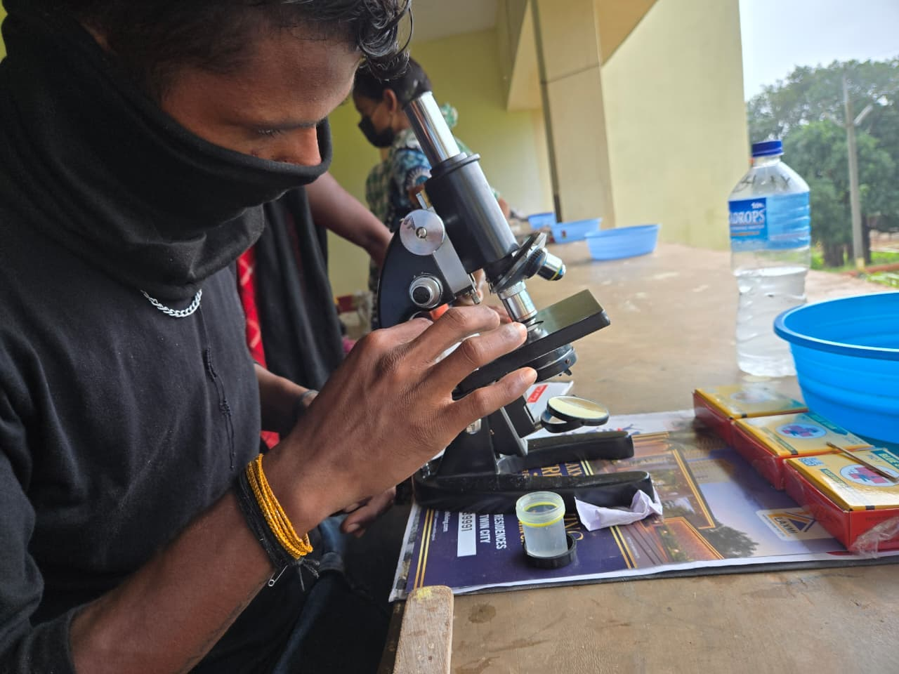
7.6 MB / PDFProject report
Trace SeriScope from field sampling and microscopy to model evaluation, explainability, and edge deployment.
SeriScope: A Low-Cost Edge-AI System for Fertility and Disease Assessment of Tassar Silkworm Eggs
Featured in
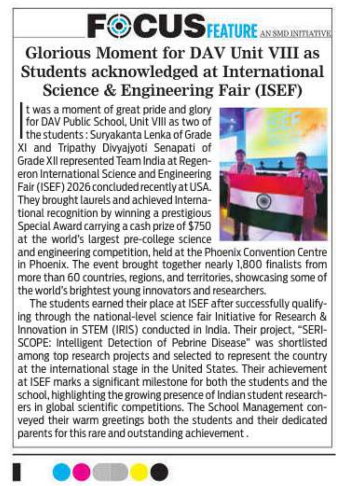
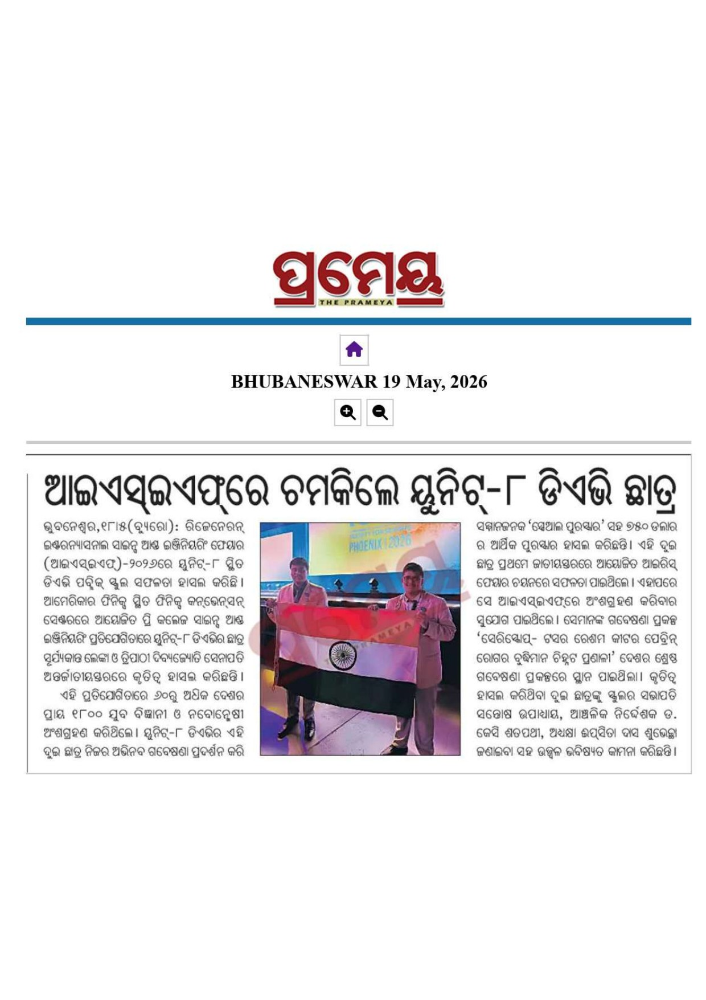
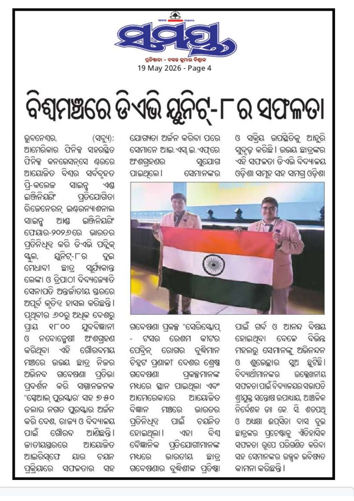
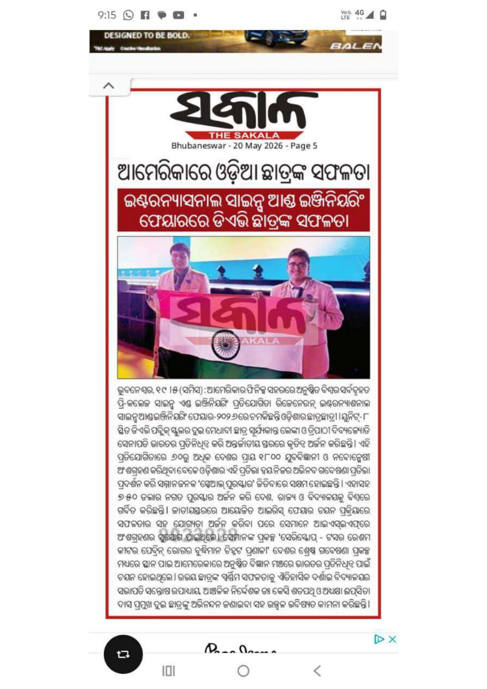
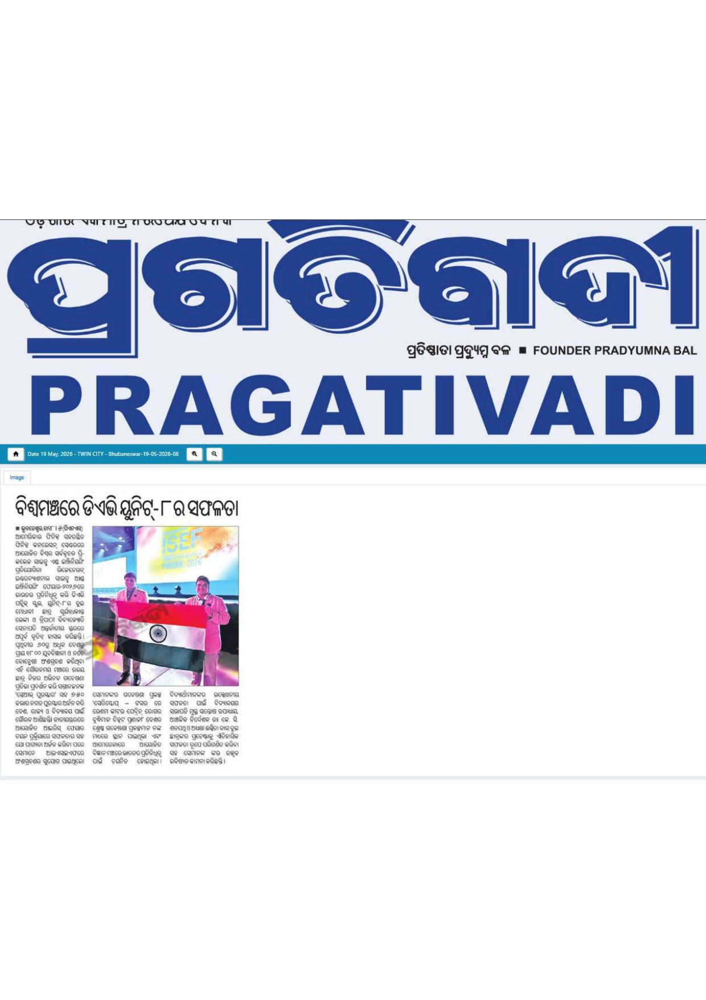
Contact
SeriScope welcomes conversations with researchers, sericulture organisations, technology partners, and institutions interested in validation or deployment.
contact@seriscope.com